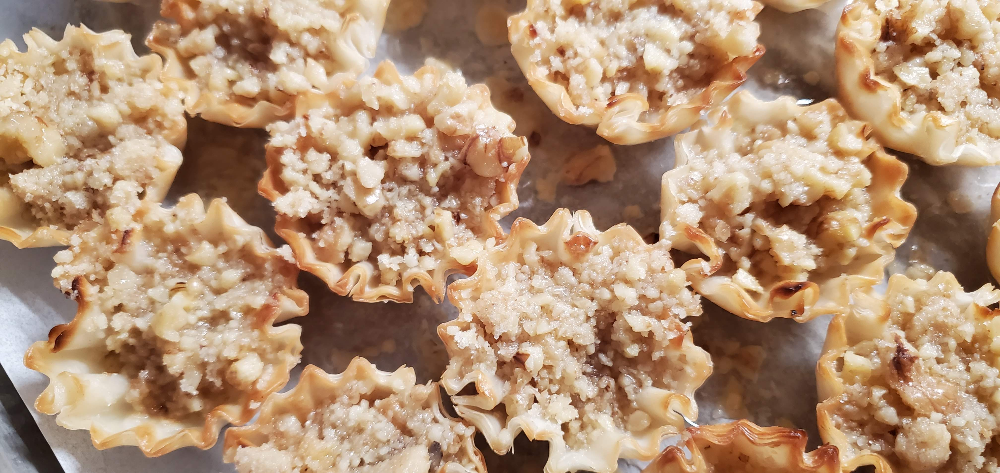

Virginia Farhat's batlawa filling in crispy phyllo cups — a bite-sized variation
Section
Syrian-Lebanese
Temp
300°F
Time
25–30 min
Ingredients
Filling
2 cups finely chopped walnuts
¼ cup sugar
1 tsp orange blossom water
½ tsp cinnamon
Pinch of cloves
Assembly
Mini phyllo shells (frozen, 15-count packages)
4 tbsp butter, melted
Syrup
1 cup sugar
½ cup water
1 tsp orange blossom water
1 tsp fresh lemon juice
Photo

Fresh from the oven
Directions
Make the syrup first: combine sugar, water, and lemon juice in a small saucepan. Bring to a boil, stir until sugar dissolves, then simmer 5 minutes. Remove from heat, stir in orange blossom water. Cool completely.
Preheat oven to 300°F.
Mix walnuts, sugar, cinnamon, cloves, and orange blossom water in a bowl.
Arrange frozen phyllo shells on a baking sheet. Brush each lightly with melted butter.
Fill each shell generously with the walnut mixture. Press lightly to compact.
Bake 25–30 minutes until light golden.
Remove from oven and immediately spoon cold syrup over each tartlet. Let absorb fully before serving.
Tip: The key is cold syrup over hot tartlets — this is what gives batlawa its signature texture.
Storing: Keeps at room temperature up to 1 week, loosely covered.